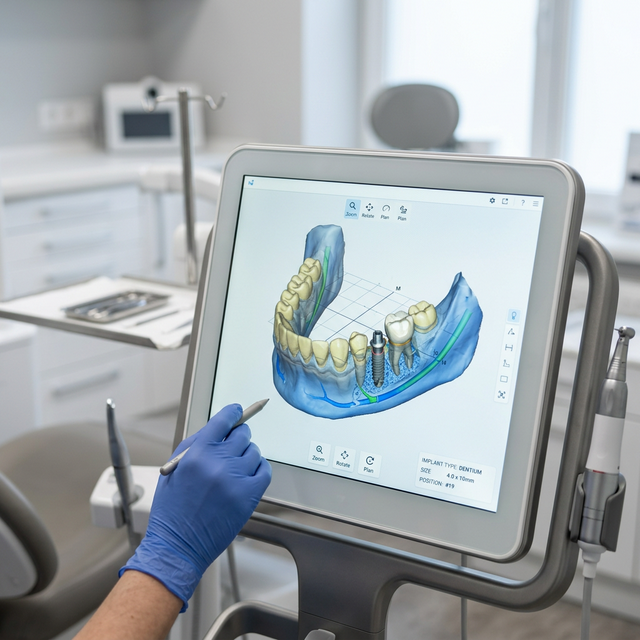

치아미백 과정

1단계. 치아 색 분석 및 진단
의료진이 직접 쉐이드 가이드(치아 색상표)를 통해 현재 치아의 변색 정도를 정밀하게 평가하고 환자분과 치료 목표를 설정합니다.

2단계. 잇몸 보호제 도포
치아만 깔끔하게 미백하기 위해 입술을 보호하는 개구기를 장착하고, 미백제가 잇몸에 닿지 않도록 잇몸 보호제를 꼼꼼하게 도포하여 굳힙니다.

3단계. 미백제 도포 및 특수 광선 조사
도포된 고농도 치아 미백제에 특수 광선(레이저)을 조사하여 미백 약제가 치아 내부로 깊숙이 스며들어 색소를 분해하도록 유도합니다.
4단계. 미백 결과 평가 및 마무리
보호제와 투여된 약제를 씻어내어 마무리한 뒤, 처음 단계에서 비교했던 치아 색상과 대조하여 미백 효과를 시각적으로 확인시켜 드립니다.